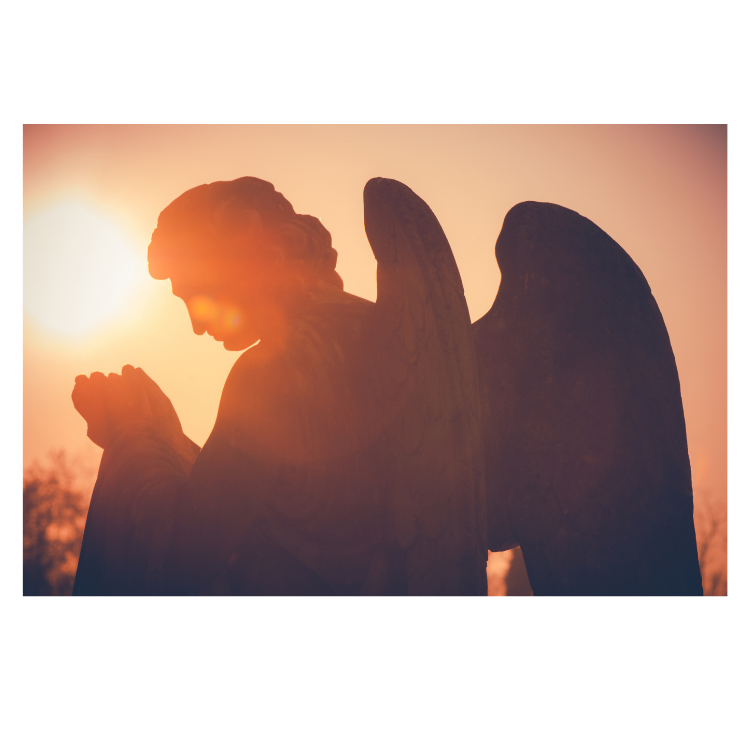

Curiosidades

Muitas pessoas têm a curiosidade de saber como foi o processo de escolha do nome da nossa igreja, Anjos da Guarda,então vamos explicar!
Os anjos são os seres espirituais que fazem o meio-de-campo entre os homens e o Todo-Poderoso. As asas possibilitam que eles façam o caminho entre o céu e a terra. Ainda segundo a tradição cristã, anjos não nascem, não morrem e não se reproduzem. Podem manifestar-se corporalmente, mas não têm peso ou altura. Os Santos Anjos intercedem em vista da realização do desígnio de Deus; do cumprimento da missão de nosso Senhor Jesus Cristo na santificação; e da salvação da nossa alma. Os Santos Anjos são criaturas pessoais e imortais, puramente espirituais, dotadas de inteligência e vontade, que intercedem a Deus por nós. Eles são servos e mensageiros de Deus, que “contemplam continuamente o rosto do meu Pai, que está nos Céus”, disse Jesus Cristo, o Filho de Deus (cf. Mt 18, 10). Eles são os poderosos executores das ordens do Senhor, sempre atentos à Sua palavra (cf. Sl 103, 20). As asas dos anjos representam sua locomoção, pensando nisso criamos o nosso bordão "Mensageiros do Senhor", que tem relação tanto com os anjos de Deus como com nós, fiéis, que buscamos cada dia fazer da palavra uma mensagem de amor, espiritualismo e fidelidade.